Unit 5 Spatial Models: spatial autocorrelation and cluster analysis
Overview
This practical focusses on cluster analysis (i.e. determining whether your data are are spatially clustered, also known as spatially autocorrelated) and autoregressive models (optional). These are given a comprehensive treatment (equations references etc).
Essentially the practical describes how to undertake cluster analyses using different methods for statistically testing for the similarity of nearby observations (i.e. spatial autocorrelation). It extends the practicals from GEOG2150 to show other techniques and develops ideas of how we measure nearby.
Autocorrelation is the similarity between attribute values of nearby observations when examined over the entire study region. Measures spatial autocorrelation describe the degree of attribute similarity and essentially allow Tobler’s Law to be evaluated.
There are a number of approaches for doing this, as described in Chapters 7 and 8 of Brunsdon and Comber (2025) and in some of the relevant contributions in the GIS Body of Knowledge (see AM-22 - Global Measures of Spatial Association http://gistbok.ucgis.org/bok-topics/global-measures-spatial-association and FC-37 - Spatial Autocorrelation http://gistbok.ucgis.org/bok-topics/spatial-autocorrelation).
This practical illustrates the use of a spatially Lagged Mean, Moran’s I (Moran 1950), Local Indicators of Spatial Association (LISA) (Anselin 1995) and Getis and Ord’s G Statistic (Getis and Ord 1992) to determine whether there is clustering in our data. We can undertake these tests in R very easily using tools in the spdep package.
However, all of these approaches depended on some measure of “what observations are nearby to what other observations”. Again the spdep package supports a number of different ways of constructing neighbour lists. These are also explored in a bit of detail (extending the work you did in GEOG2150).
Data and Packages
For this section we will again work with the Brexit referendum data over the 380 UK Local Authority Districts (LADs) with socio-economic data collected from the 2011 Census. The data were made available in by The Electoral Commission and used by Beecham et al. (2020) for some advanced visual analysis of the trends. It was used in Week 2 for the EDA work.
The code below loads some packages and then the data. It transforms the data from WG84 (in degrees) to OSGB projection (in metres) and generates a map of the leave share.
packages <- c("sf", "tmap", "spdep", "spatialreg", "cowplot", "tidyverse")
# check which packages are not installed
not_installed <- packages[!packages %in% installed.packages()[, "Package"]]
# install missing packages
if (length(not_installed) > 1) {
install.packages(not_installed, repos = "https://cran.rstudio.com/", dep = T)
}
# load packages
library(sf) # for spatial data
library(tmap) # for online mapping -- don't worry if you cannot install this!
library(spdep) # for spatial analysis
library(spatialreg) # for spatial regression
library(cowplot) # for combining plots
library(tidyverse) # for everything else!
# load the data
gb = st_read('data_gb.geojson', quiet = T)
# transform to OSGB projection
gb <- st_transform(gb, 27700)
# create the map
p_vote =
ggplot(gb) +
geom_sf(aes(fill = share_leave)) +
scale_fill_gradient2(midpoint = 0.5, low = "red", high = "blue") +
theme_minimal()
p_vote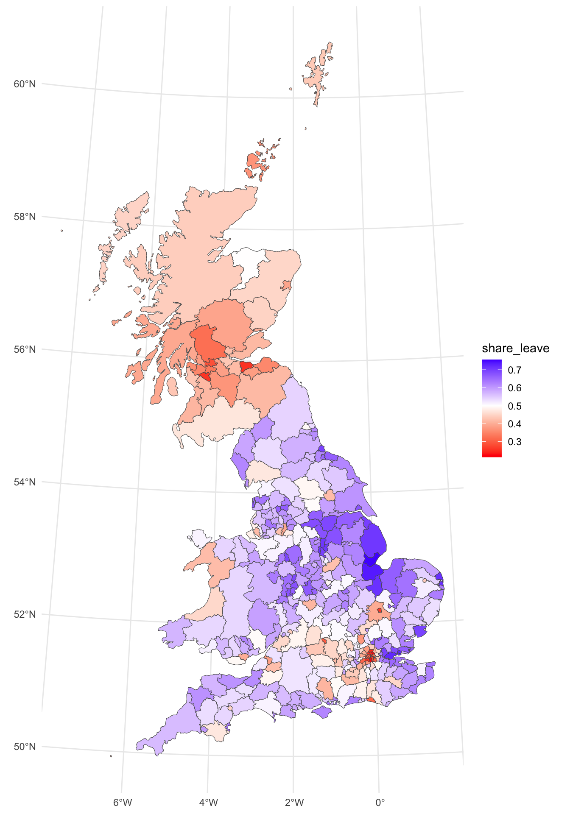
Figure 5.1: The Leave vote share over LADs.
The map shows some distinct and well-reported patterns. However, a key question a geographer might ask is whether the spatially patterns of the leave vote can be examined in a more quantifiable way. Neighbour lists can be constructed to support measures of spatial autocorrelation.
5.1 Defining nearby: neighbour lists
5.1.1 Neigbours by ajacency
Neighbours can be defined in several ways, but a common definition is that a pair of areas (or polygons) which share some part of their boundaries are neighbours. If this is the “queen’s case” definition, then even a pair of areas meeting at a single corner point are considered neighbours. The more restrictive “rook’s case” requires that the common boundary must be a linear feature. Neighbour lists of either case can be extracted using the poly2nb function in the spdep package. These are stored in an nb object – basically a list of neighbouring polygons for each LAD polygon. Note that in this case Queen’s case neighbours are computed. This is the default. To compute the Rook’s case, the optional argument queen=FALSE would be added to the call to poly2nb below.
## Warning in poly2nb(gb): some observations have no neighbours;
## if this seems unexpected, try increasing the snap argument.## Warning in poly2nb(gb): neighbour object has 7 sub-graphs;
## if this sub-graph count seems unexpected, try increasing the snap argument.## Neighbour list object:
## Number of regions: 380
## Number of nonzero links: 1888
## Percentage nonzero weights: 1.307479
## Average number of links: 4.968421
## 6 regions with no links:
## 101, 125, 126, 171, 174, 179
## 7 disjoint connected subgraphsNow from this it is clear that some LADs have no neighbour: observations 101, 125, 126, 171, 174 and 179. On inspection these are island LADs. You can examine these visually using the code below and then zooming in - have a look at the Isle of Wight or Anglesey, for example.
NB The code below uses the tmap package for online interactive mapping. This module has not covered mapping using the tmap package this year as it is in the process of being redefined.
# examine zero links locations
gb$rn = rownames(gb)
tmap_mode("view")
tm_shape(gb) +
tm_borders() +
tm_text(text = "rn") +
tm_basemap("OpenStreetMap")
tmap_mode("plot")Now in order to complete the adjacency analysis, the list needs to be updated with links for island LADs. The table below shows the links and record numbers (IDs) of adjacent LADs:
| ID.code | Authority.Name | Adjacent.to | Adjacent.ID.codes |
|---|---|---|---|
| 101 | Scilly Isles | Cornwall | 100 |
| 125 | Isle of Wight | New Forest, Southampton, Portsmouth | 247, 124, 123 |
| 126 | Anglesey | Gwynedd | 127 |
| 171 | Orkneys | Highland, Shetland | 165, 174 |
| 174 | Shetland Islands | Orkneys | 171 |
| 179 | Outer Hebredes | Highland | 165 |
We can can use this information (discovered by examining the data using the zoomable online maps) to edit adjacency list as below. Notice the double bracket syntax that is used with list format data, g.nb and the use of asinteger to force the numeric values to be integers:
## edit the links
g.nb[[101]] = as.integer(100)
g.nb[[125]] = as.integer(c(247, 124, 123))
g.nb[[126]] = as.integer(127)
g.nb[[171]] = as.integer(c(165, 174))
g.nb[[174]] = as.integer(171)
g.nb[[179]] = as.integer(165)We can re-examine the adjacency list and see that there are now no zero links.
## Neighbour list object:
## Number of regions: 380
## Number of nonzero links: 1897
## Percentage nonzero weights: 1.313712
## Average number of links: 4.992105
## 7 disjoint connected subgraphsIt is also possible to plot an nb object – this represents neighbours as a network. The nb2lines function in spdep requires a coords parameter of the centroids of the (LAD) polygons regarded as neighbours. In the code below, this is created by the st_centroid function nested inside the st_geometry function. You should examine the help for these to see what they do if it is not apparent by their naming. The results may be plotted as a map as in the Figure below.
# Create a line layer showing Queen's case contiguities
gg.net <- nb2lines(g.nb,coords=st_geometry(st_centroid(gb)), as_sf = F) ## Warning: st_centroid assumes attributes are constant over geometries# Plot the contiguity and the GB layer
p_adj =
ggplot(gb) + geom_sf(fill = NA, lwd = 0.1) +
geom_sf(data = gg.net, col='red', alpha = 0.5, lwd = 0.2) +
theme_minimal() + labs(subtitle = "Adj")
p_adj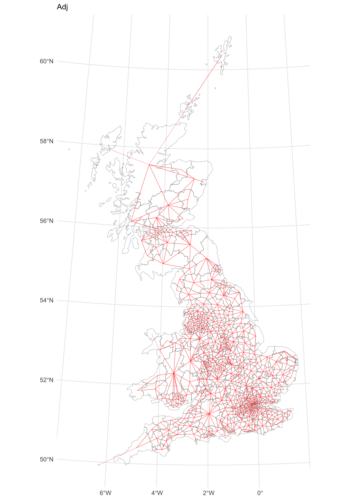
Figure 5.2: A map of LAD connectivity by ajacency.
5.1.2 Neighbours by nearest \(n\)
An alternative approach for defining neighbours by adjacency (area contiguity) is to determine the \(k\) nearest neighbours. This is simple to apply using the knearneigh function in spdep, but the selection \(k\) requires strong justification when used in practice. Note that this function uses point locations, extracted from the LAD geometric centroids.
## Warning: st_centroid assumes attributes are constant over geometries## Neighbour list object:
## Number of regions: 380
## Number of nonzero links: 1900
## Percentage nonzero weights: 1.315789
## Average number of links: 5
## Non-symmetric neighbours listThis can be mapped as before:
## Warning: st_centroid assumes attributes are constant over geometries# Plot the contiguity and the GB layer
p_nn =
ggplot(gb) + geom_sf(lwd = 0.1, fill = NA) +
geom_sf(data = gg.net, col='red', alpha = 0.4, lwd = 0.4) +
theme_minimal() + labs(subtitle = "NN")
p_nn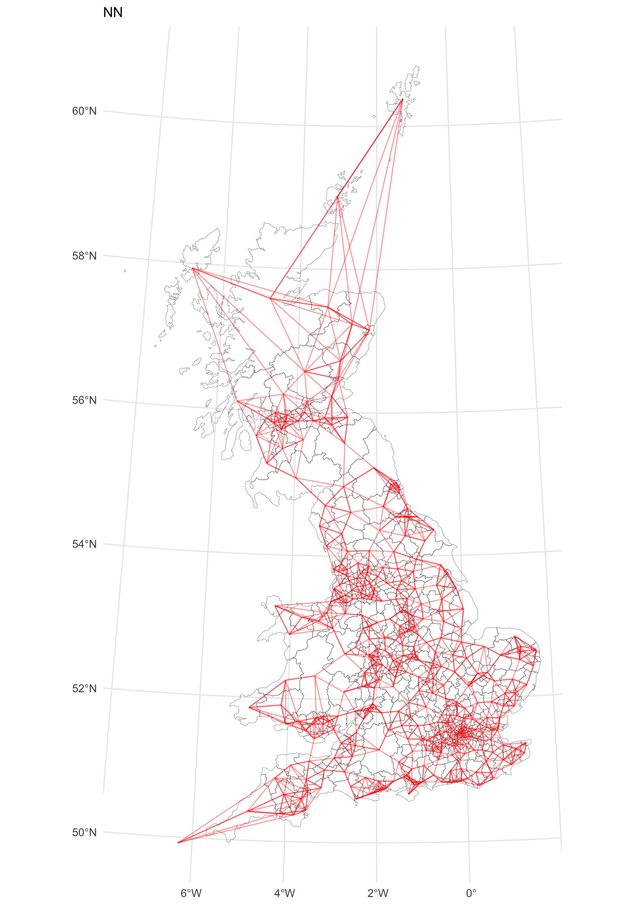
Figure 5.3: A map of LAD connectivity by nearest 5 neighbours.
5.1.3 Neighbours by distance
A final approach is to identify observations that are within a certain distance range. The code below uses a 100km radius, but again in practice there needs to be some justification for selecting a specific range (for example relating to some theoretical spatial dispersal, etc). Again this takes points and the LADs centroids are passed to the dnearneigh function:
## Warning: st_centroid assumes attributes are constant over geometries## Warning in dnearneigh(st_centroid(gb), d1 = 0, d2 = 1e+05): neighbour object has 5 sub-graphs## Neighbour list object:
## Number of regions: 380
## Number of nonzero links: 26724
## Percentage nonzero weights: 18.50693
## Average number of links: 70.32632
## 4 regions with no links:
## 101, 171, 174, 179
## 5 disjoint connected subgraphsExamining these we can see these remote islands:
These locations either need to be connected in the network as before or excluded from the analysis (because they are more than 100km from each other). Here they are linked (to the Highland local authority, record 165)
# connect islands as before
g.nb3[[101]] = as.integer(100) # Scilly to Cornwall
g.nb3[[171]] = as.integer(c(165, 174)) # Orkney to Highland & Shetland
g.nb3[[174]] = as.integer(171, 165) # Shetland to Orkney & Highland
g.nb3[[179]] = as.integer(165) #Hebrides to HighlandThis can again be mapped (the creation of gg.net will take a few moments to run):
# Create a line layer showing Queen's case contiguities
gg.net <- nb2lines(g.nb3, coords=st_geometry(st_centroid(gb)), as_sf = F) ## Warning: st_centroid assumes attributes are constant over geometries# Plot the contiguity and the GB layer
p_dist =
ggplot(gb) + geom_sf(fill = NA, lwd = 0.1) +
geom_sf(data = gg.net, col='red', alpha = 0.5, lwd = 0.2) +
theme_minimal() + labs(subtitle = "Dist")
p_dist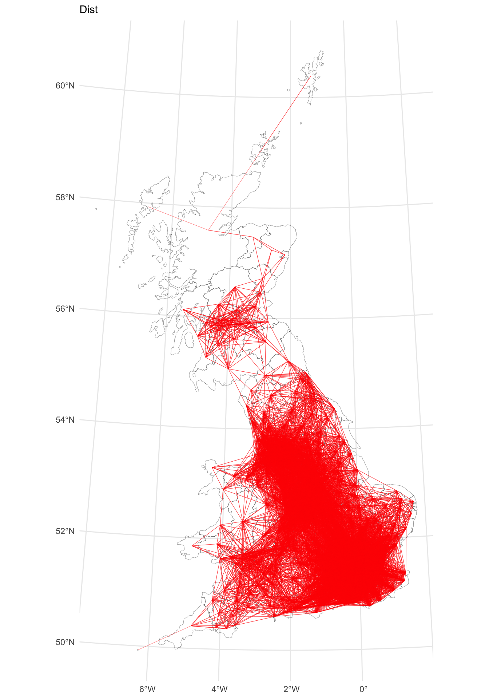
Figure 5.4: A map of LAD connectivity by distance (100km).
5.1.4 Summary
Many spatial models require some measure of nearby. Neighbour lists provide a convenient way of capturing nearby observations and these can be constructed in different ways, with potential implications for the spatial analyses that use such information (such as spatial regression or measures of spatial autocorrelation). The code plots subsets of each map generated from each neighbour list to illustrate this.
p1 = p_adj +
coord_sf(xlim = c(180000, 380000),
ylim = c(170000, 400000), datum = 27700) +
theme(axis.text = element_blank(),
axis.ticks = element_blank())
p2 = p_nn +
coord_sf(xlim = c(180000, 380000),
ylim = c(170000, 400000), datum = 27700) +
theme(axis.text = element_blank(),
axis.ticks = element_blank())
p3 = p_dist +
coord_sf(xlim = c(180000, 380000),
ylim = c(170000, 400000), datum = 27700) +
theme(axis.text = element_blank(),
axis.ticks = element_blank())
plot_grid(p1, p2, p3, ncol = 3)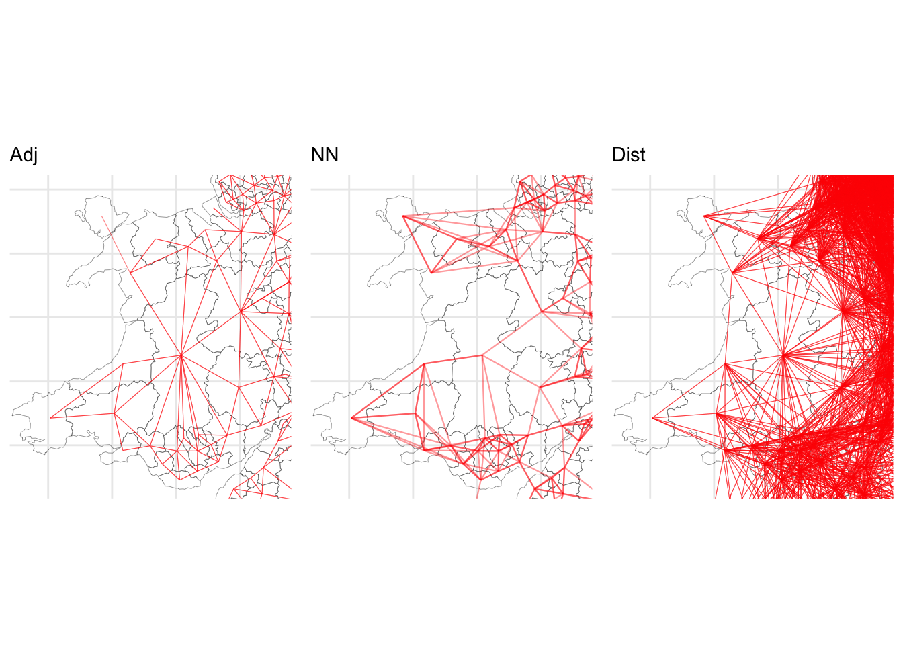
Figure 5.5: Details of the different maps of LAD connectivity.
5.2 Spatial Autocorrelation and Clusters
5.2.1 Neighbours and Lagged Mean Plots
One simple approach for determining clusters is to compare the value in each county with the average values of its neighbours. This can be achieved via the lag.listw function in the spdep library.
The lagged mean approach calculates a weighted mean from the values ( \(z_i\) ) of each neighbouring observation (polygon or area) \(i\). If \(\delta_i\) is the set of indices of the neighbours of polygon \(i\), and \(|\delta_i|\) is the number of elements in this set, then this mean (denoted as \(\tilde{z_i}\) is defined by
\[ \tilde{z_i} = \sum_{j \in \delta_i} \frac{1}{|\delta_i|} z_i \label{laggedmean} \]
Thus, the lagged mean is a weighted combination of values of the neighbours. In this case, the weights are the same within each neighbour list, but in some cases they may differ (for example, if weighting were inversely related to distance between polygon centres).
Neighbour weights can be generated using the nb2listw which results in listw objects. The function lag.listw then computes a spatially lagged mean (i.e. a vector of \(z_i\) values) – here, these are calculated, and then mapped as in the figure below, along side the original map. What this shows is a smoother general pattern of the spatial trends in the data.
# compute the weighted list from the g.nb object
g.lw = nb2listw(g.nb)
# compute the lagged means
gb$lagged.means <- lag.listw(g.lw, gb$share_leave)
p_lagged =
ggplot(gb) + geom_sf(aes(fill = lagged.means)) +
scale_fill_gradient2(midpoint = 0.5, low = "red", high = "blue") +
theme_minimal()
plot_grid(p_vote, p_lagged)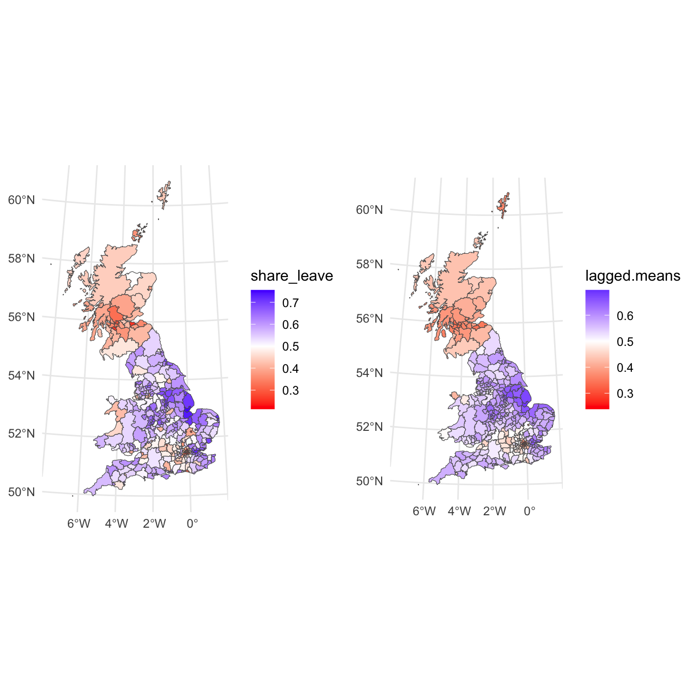
Figure 5.6: The vote leave shared (left) and a map of the spatially lagged mean of the leave vote share (right).
A lagged mean plot is produced – as described this is a scatter plot of \(z_i\) (share_leave) against the lagged mean, \(\tilde{z_i}\) . Here the line \(x = y\) is added to the plot as a point of reference. The idea is that when nearby polygons tend to have similar \(z_i\) values, there should be a linear trend in the plots. However, if each \(z_i\) is independent, then \(\tilde{z_i}\) will be uncorrelated to \(z_i\) and the plots will show no pattern. Below, code is given to produce this plot shown:
p_lm =
ggplot(data = gb, aes(x = share_leave, y = lagged.means)) +
geom_point(shape = 1, alpha = 0.5) +
geom_hline(yintercept = mean(gb$lagged.means), lty = 2) +
geom_vline(xintercept = mean(gb$share_leave), lty = 2) +
geom_abline() +
coord_equal()
p_lm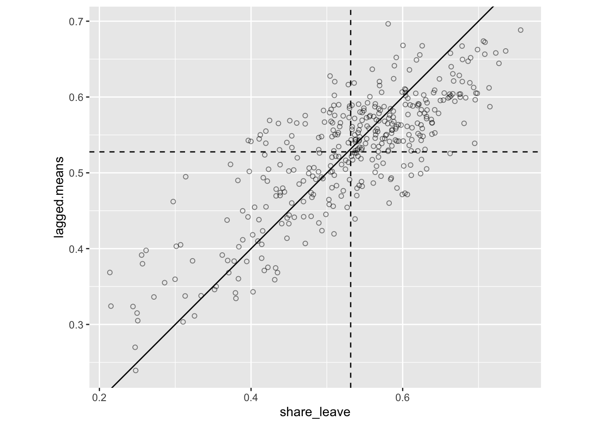
Figure 5.7: The lagged mean plot.
The key reason for this is plot is to see whether there is a linear pattern relationship, suggests autocorrelation is present, i.e. that there is a fair some degree of positive association between \(z_i\) and \(\tilde{z_i}\). This means generally that when \(z_i\) is above average, so is \(\tilde{z_i}\) , and when one is below average, so is the other.
In this case we have the first piece of evidence that there is spatially autocorrelation on the leave share vote: the lagged mean plot indicates that some spatial autocorrelation is present. However, a key question a geographer might ask is whether the spatial patterns of the leave vote are statistically (significantly) clustered.
5.2.2 Moran’s I for determining Clusters and Spatial Autocorrelation
Having found spatial autocorrelation in the lagged man plots, we can test for this statistically to determine whether nearby observations (such as the share_leave values in the LAS data) are spatially clustered. That is, co-dependency between pairs of adjacent or neighbouring values is present. Moran’s I, LISA and G statistics allow us to test for this, and provide a measure of the degree of clustering amongst neighbouring observations. The Moran’s I coefficient (Moran 1950) is defined as follows::
\[ I = \frac{n}{\sum_i \sum_j w_{ij}} \frac{\sum_i \sum_j w_{ij} (z_i - \bar{z}) (z_j - \bar{z})}{\sum_i (z_i - \bar{z})^2} \label{morani} \]
where \(w_{ij}\) is the \(i,j\)th element of a neighbour or adjacency weights matrix \(\mathbf{W}\), as defined above using the nb2listw function, specifying the degree of dependency between polygons \(i\) and \(j\), \(z\) is the attribute examined for autocorrelation and \(\bar{z}\) is the mean of that attribute.
From the above equation description it is clear that in order to compute some measure of autocorrelation, information about observation nearness or adjacency is needed: for example what LADs in the UK are adjacent to, or neighbouring, what other LADs. We can used the weighted list g.lw created above. The code below uses the weighted list to compute Moran’s I for the vote leave share variable (share_leave) with the moran.test() function as in the code below :
##
## Moran I test under randomisation
##
## data: gb$share_leave
## weights: g.lw
##
## Moran I statistic standard deviate = 18.268, p-value < 2.2e-16
## alternative hypothesis: greater
## sample estimates:
## Moran I statistic Expectation Variance
## 0.626791902 -0.002638522 0.001187123This tells us that it is highly correlated: Moran’s I has theoretical limits from -1 for perfect dispersion or repulsion, to +1 for perfect clustering, with 0 indicting a perfectly random pattern.
In order to explore this a bit more deeply we can use a Moran plot or Moran scatterplot – see Anselin (1995); Anselin (2019). This generates a scatter plot of the average of the neighbouring LADs leave share (referred to as spatially lagged) against the leave share value recorded for each LAD. The four quadrants are determined by the mean for each of these and indicate high-high values (top right) and low-low vales (bottom left). So the top right shows LADs which have high leave share rates and are surrounded with LADS which also have high leave share rates.
This is the same as the lagged mean plot above, but addition to the ggplot version earlier, this approach also identifies points with a high influence in providing a best-fit line to the plot.
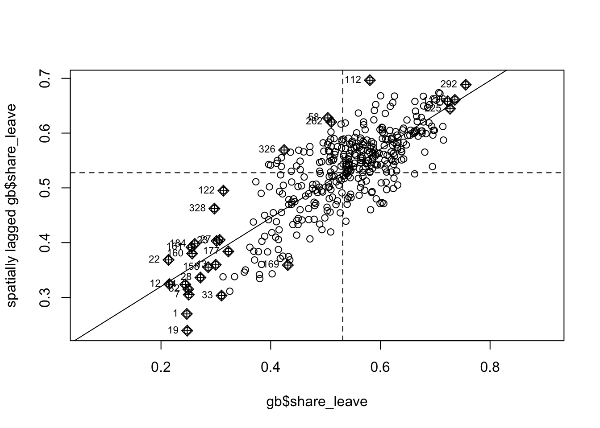
Figure 5.8: The Moran plot of the leave vote.
This shows a strong positive linear trend reflecting the autocorrelation of the share_leave attribute. The labelled points are those with a high influence in providing a best-fit line to the plot.
Returning to the Moran’s I value, this suggests large amount of spatial autocorrelation in the share_leave attribute. This is fine, but one problem is deciding whether the above value is sufficiently high to suggest that an autocorrelated process model is a plausible alternative to an assumption that the voting rates are independent. There are two issues here:
- Is this value of \(I\) a relatively large level on an absolute scale?
- How likely is the observed \(I\) value, or a larger value, to be observed if the rates were independent?
The first of these is a benchmarking problem. Like correlation, Moran’s I is a dimensionless property so that, for example, with a given set of polygons and associated matrix, area-normalised rates of rainfall would have the same Moran’s I regardless of whether rainfall was measured in millimetres or inches. However, while standard correlation is always restricted to lie within the range [-1, +1], making, say, a value of 0.8 reasonably easy to interpret, the range of Moran’s I varies with the nature of the lw object, the weighted adjacency matrix, \(\mathbf{W}\).
To overcome, this the function below determines the range of possible I values for any given lw object:
moran.range <- function(lw) {
wmat <- listw2mat(lw)
return(range(eigen((wmat + t(wmat))/ 2) $values))
}
moran.range(g.lw)## [1] -0.8657588 1.1079643Here, \(I\) can range between -0.87 and 1.11. Thus on an absolute scale the reported value suggests a high level of spatial autocorrelation: i.e. that the leave share of the vote is strongly clustered. However, another key question a geographer might ask is where is the leave vote significantly clustered. This can be done with a LISA statistic.
Task 1
Undertake a Moran’s I test and Moran plot of the private_transport_to_work variable. Comment on how it compares to the share_leave attribute.
5.2.3 LISA for determining local clusters and spatial autocorrelation
The value of \(I\) above is a global value - it summarises the whole study area. In reality some regions of the study area may be more clustered than others. Anselin (1995) proposed the idea of local indicators of spatial association (LISAs). He states two requirements for a LISA:
- The LISA for each observation gives an indication of the extent of significant spatial clustering of similar values around that observation.
- The sum (or mean) of LISAs for all observations is proportional to a global indicator of spatial association.
It is possible to apply a statistical test to the LISA for each observation, and thus test whether the local contribution to clustering around observation is significantly different from zero. This provides a framework for identifying localities where there is a significant degree of spatial autocorrelation or clustering (or repulsion). An initial example of a LISA may be derived from the Moran’s I index.
This uses the mean neighbourhood values of adjacent polygons to detect clustering, \(I_i\), a local measure of clustering. It indicates repulsion when \(I_i\) is a large negative value, clustering when it is a large positive value and if the magnitude is not particularly large (for either positive or negative values) this suggests that there is little evidence for either clustering or repulsion. For each \(I_i\), a significance test may be carried out against a hypothesis of no spatial association.
The code snippets below undertake this
- Compute the local Moran’s I (and map the result)
# note how the result is assigned directly to gb
gb$lI <- localmoran(x = gb$share_leave, listw = g.lw)[, 1]
# create the map
p_lisa =
ggplot(gb) +
geom_sf(aes(fill= lI), lwd = 0.1) +
scale_fill_gradient2(midpoint = 0, name = "Local\nMoran's I",
high = "darkgreen", low = "white") +
theme_minimal()
# print the map
p_lisa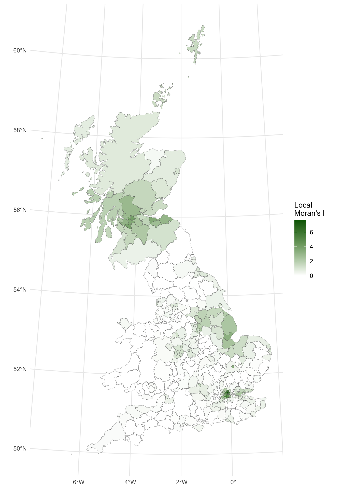
Figure 5.9: A map of the local Moran’s I.
The map shows there is some evidence for both positive and negative \(I_i\) values - i.e. that there is a high degree of clustering and some dispersion. However, it is useful to consider the p-values for each of these values, as described above.
- Compute the p-values
These are calculated and mapped below. In this case a manual shading scheme (i.e. one in which the shading interval breaks are specified directly) is used, based on conventional critical p-values.
The p-values can be plotted. Here the palette shows significantly clustered areas in white, remembering that lower p-values are more important.
p_lisa_pval =
ggplot(gb) +
geom_sf(aes(fill= pval), lwd = 0.1) +
scale_fill_gradient2(midpoint = 0.05,
name = "p-values",
high = "red", low = "white") +
theme_minimal()
# print the map
p_lisa_pval 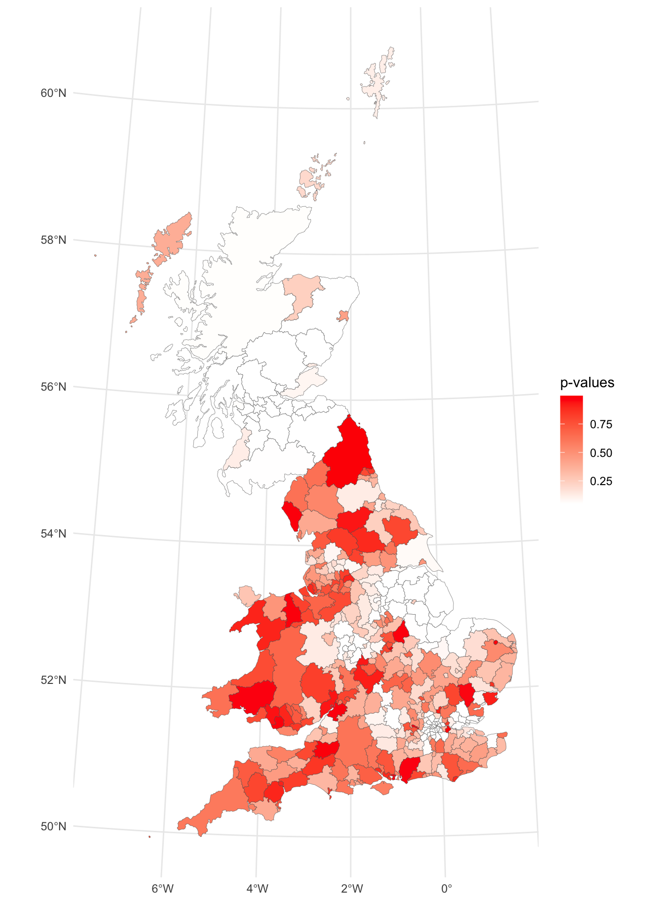
Figure 5.10: A map signficant (white) and insignificant (reds) areas local Moran’s I.
From the resultant map, a number of places can be identified where the p-value is notably low (white) and therefore statistically surprising, suggesting the possibility of a cluster of either high or low values, in this case in highly localised areas around in Scotland, the East Midlands, Birmingham and around London.
It is instructive to examine the maps together:
plot_grid(p_lisa + theme(legend.position = "bottom"),
p_lisa_pval + theme(legend.position = "bottom"),
ncol = 2)And we can use the p-values to significantly spatially autocorrelated local highlight areas as in:
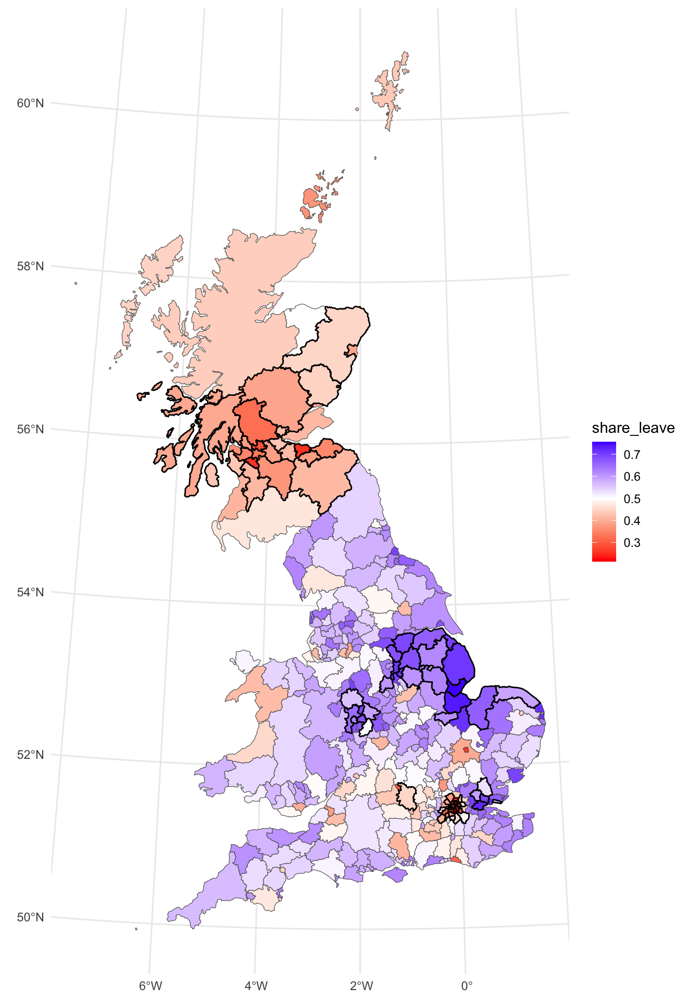
Figure 5.11: A map of the local Moran’s I of the leave vote, with significantly clustered areas highlighted.
Task 2
Undertake a LISA analysis of the degree_educated variable and map the significantly autocorrelated LADs (no need to use midpoint = 0.5).
5.2.4 Getis-Ord G statistic
An alternative to the analyses and maps above is to use a Getis and Ord \(G\) Statistic (Getis and Ord 1992) in order to identify whether either high or low values cluster spatially. Statistically significant clusters are those with high values, where other areas within the predefined distance also share high values too.
This can be mapped in the same way as the LISA (with a subtly different syntax). This shows clusters of high leave votes (red) and low ones (blue).
p_geto =
ggplot(gb) +
geom_sf(aes(fill = gstat)) +
scale_fill_gradient2(midpoint = 0.5, low = "red", high = "blue",
name = "G Statistic")+
theme_minimal()
p_geto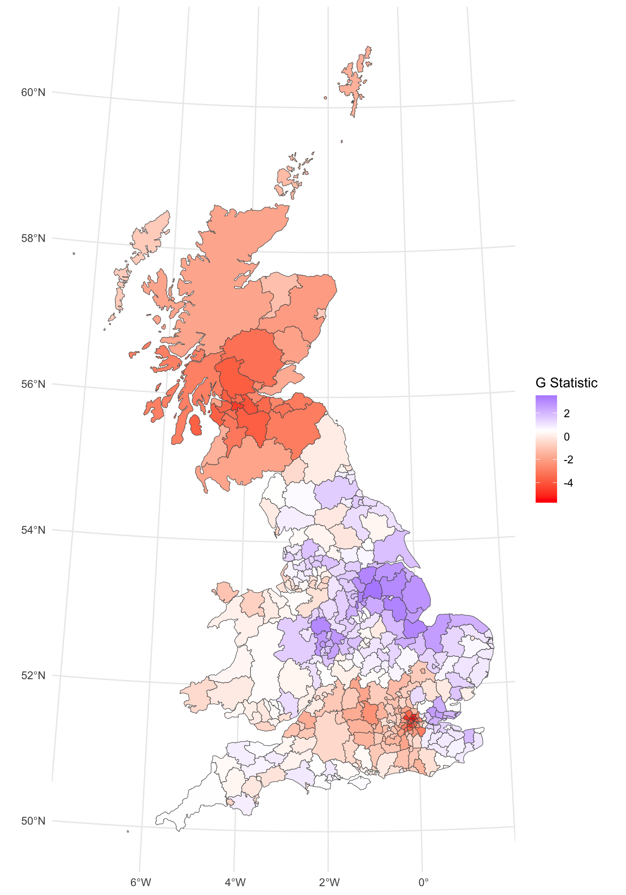
Figure 5.12: The Getis & Ord G-statistic of the leave vote.
The impacts (benefits?) of incorporating a broader idea of Neighbourhood can be seen here: the key leave areas have a positive \(G\) (in blue) and the key remain areas a negative one in red. So the interpretation of the \(G\) is slightly different:
- in a LISA negative values indicate dispersion and positive ones clustering. But we have no idea about the values of the variable itself;
- in a \(G\) analysis the results are given as z-scores (a way of standardising the distribution of numeric variables to the same scale) and larger values indicate high clustering and the direction (positive or negative) indicates high or low value clusters.
Task 3
Recreate the \(G\) Statistic, but this time using the three neighbourhood lists, g.nb, g.nb2 and g.nb3 and compare the mapped results.
Answers to Tasks
Task 1: Undertake a Moran’s I test and Moran plot of the private_transport_to_work variable. Comment on how it compares to the share_leave attributes.
##
## Moran I test under randomisation
##
## data: gb$private_transport_to_work
## weights: g.lw
##
## Moran I statistic standard deviate = 21.754, p-value < 2.2e-16
## alternative hypothesis: greater
## sample estimates:
## Moran I statistic Expectation Variance
## 0.741982709 -0.002638522 0.001171646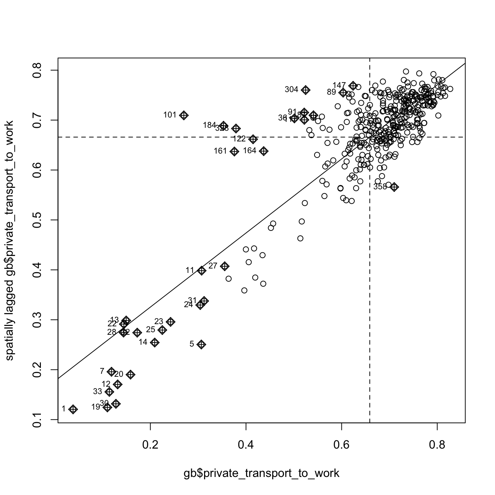
There are a number of things to note from this plot:
- the spatial autocorrelation is stronger (0.74) indicating a stronger degree of clustering
- the Moran plot reflects this with a tighter scatterplot
- there is an easier explanation: levels of public transport to work will be highly related to urban / rural context and these by definition have a strong geographical component: nearby areas are likely to have similar levels of this variable just because of what it captures (from high levels of transport infrastructure in rural areas to low levels in rural ones).
Task 2: Undertake a LISA analysis of the degree_educated variable and map the significantly autocorrelated LADs as in the figure above (no need to use midpoint = 0.5).
The results are shown in below. They show some areas significant spatial autocorrelation the East, East Midlands and London.
# Task 2
# create the p-value
g.lw = nb2listw(g.nb)
# no need to calculate the LISA
lI = localmoran(gb$degree_educated,g.lw)[, 1]
# just the significance is needed for the task!
pval = localmoran(gb$degree_educated,g.lw)[, 5]
# now find areas that are significant (ie p-values < 0.05)
index = pval <= 0.05
# and use this to just map the significant areas
p_de_sig =
ggplot(gb) + geom_sf(fill = NA, lwd = 0.1) +
geom_sf(data = gb[index,], fill = "red") +
theme_minimal()
p_de_sig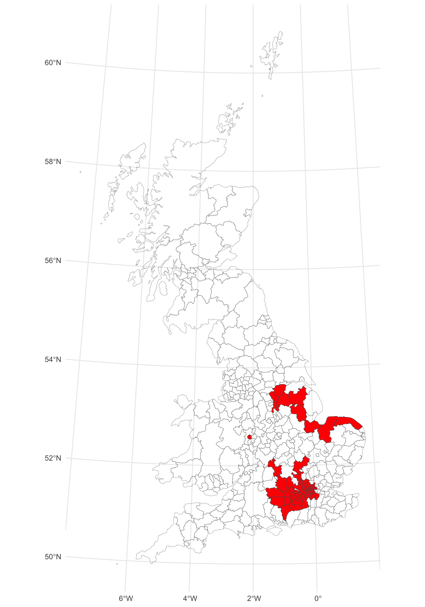
Task 3: Recreate the \(G\) Statistic, but this time using the three neighbourhood lists, g.nb, g.nb2 and g.nb3 and compare the mapped results.
# Task 3
# convert to weighted neighbourhood list
g.lw1 = nb2listw(g.nb) # adjacency
g.lw2 = nb2listw(g.nb2) # nearest n = 5
g.lw3 = nb2listw(g.nb3) # distance = 100km
# calculate the G stat
gb$gstat1 <- as.numeric(localG(gb$share_leave, g.lw1))
gb$gstat2 <- as.numeric(localG(gb$share_leave, g.lw2))
gb$gstat3 <- as.numeric(localG(gb$share_leave, g.lw3))
# plot
p_g_adj =
ggplot(gb) +
geom_sf(aes(fill = gstat1)) +
scale_fill_gradient2(midpoint = 0.5,
low = "red", high = "blue",
name = "Adj") +
theme_minimal() +
theme(axis.text = element_blank(),
axis.ticks = element_blank(),
legend.position = "bottom")
p_g_nn =
ggplot(gb) +
geom_sf(aes(fill = gstat2)) +
scale_fill_gradient2(midpoint = 0.5,
low = "red", high = "blue",
name = "NN") +
theme_minimal() +
theme(axis.text = element_blank(),
axis.ticks = element_blank(),
legend.position = "bottom")
p_g_dist =
ggplot(gb) +
geom_sf(aes(fill = gstat3)) +
scale_fill_gradient2(midpoint = 0.5,
low = "red", high = "blue",
name = "Dist") +
theme_minimal() +
theme(axis.text = element_blank(),
axis.ticks = element_blank(),
legend.position = "bottom")
plot_grid(p_g_adj, p_g_nn, p_g_dist, ncol = 3)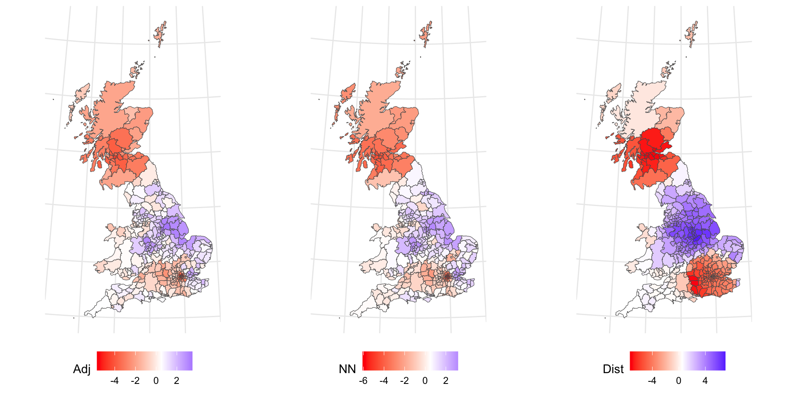
The Adjacency and nearest Neighbour patterns are similar. the Distance is different: much more highly clustered. This is because the adjacency and nearest neighbour lists are similar compared the distance list:
This demonstrates subtly different spatial patterns and hints at the different ways that the concept of a neighbourhood can be defined.
Useful Links
- There is a more in-depth visualisation practical from Roger Beecham developing the analyses of these data: http://homepages.see.leeds.ac.uk/~georjb/geocomp/03_datavis/lab.html
- There is an interesting Moran’s I R practical here: https://rpubs.com/quarcs-lab/spatial-autocorrelation
- There is nice overview of Getis and Ord here: https://gistbok.ucgis.org/bok-topics/local-measures-spatial-association